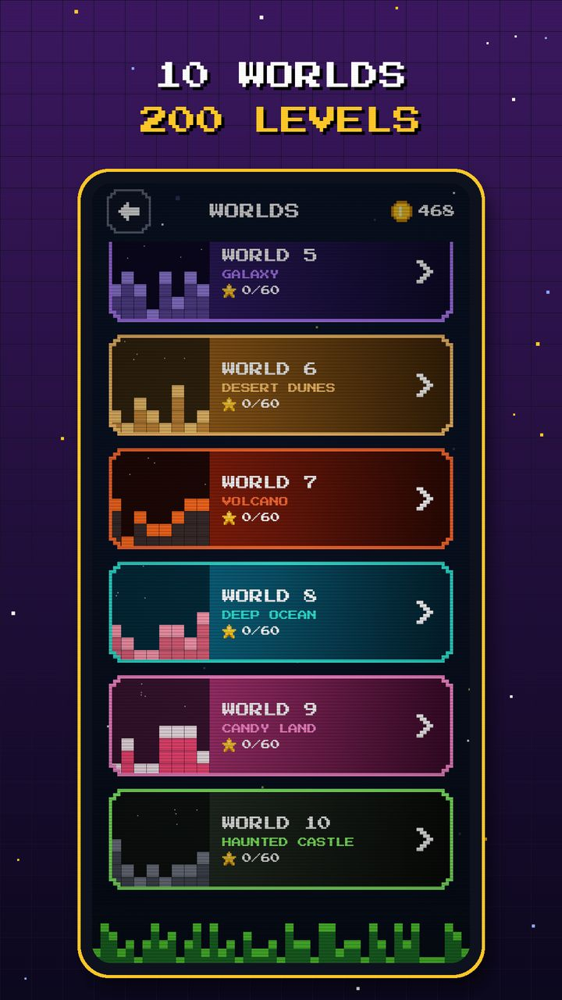

Snake Retro
Snake Retro is the classic snake game reborn in 8-bit pixel art. Eat apples, grow longer and beat 200 levels across 10 worlds, from Green Garden to Haunted Castle, with a boss level in every world. Special apples, daily rewards, 16 achievements, 21 snake skins and an Endless mode. Plays offline.
